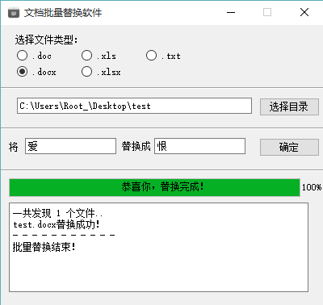

用Python写的文档批量替换软件
软件介绍
本软件受本院潘老师所托所写，经过多次版本迭代，最后写成此软件。现将源码分享出来，欢迎大家一起优化修改。
软件使用Python2.7版本写成，用户界面使用pyQt4.5版本写成，在Python中导入了win32模块，使用该模块可以调用Office接口，从而实现文档内容替换的功能。
软件功能
本软件可以批量替换文档中的特定词句，支持文件类型：.doc .docx .xls .xlsx .txt
以下为软件运行截图：

软件使用
- 用户选择需要操作的文档类型
- 选择文档所在文件夹
- 填写需要替换的词和替换后的词
- 点击“确定”按钮
- 软件发出提示，用户确定文件夹路径没有错误
- 软件遍历文件夹里（包括子文件夹）所有的用户选择的格式的文件，并显示文件个数。
- 软件后台调用微软Office软件对文件逐一进行替换
- 替换完成
注意事项
- 本软件直接修改原文件并保存，请用户务必做好文件备份，因使用本软件产生数据丢失或损坏，作者概不负责。
- 如果文件夹里某文件打开失败，软件会跳过该文件，并将错误文件路径显示出来，且将文件路径写入“logfile.txt”文件，用户可以自行查看。
- 本软件需要调用本机的Office软件接口，作者Office版本为2013专业版，软件使用无问题，如果本软件在你计算机上无法使用，请尝试更新您的Office软件。
修改记录
- 加入图形界面, 以及对打开错误的文件跳过,而不是程序报错.且不用在把程序与文件放入同一文件夹
- 跳过失败文件 统计文件个数 输出失败文件列表
- 版本1.0：修复选择目录没有文件会报错BUG
- 版本1.1：软件不再产生NewDocFiles文件夹 而是直接修改原文件并保存
- 版本2.0：加入对Excel文档xls和xlsx格式的支持 加入对纯文本文档txt格式的支持
- 更新：将错误文件信息保存至 logfile.txt文件
- 更新：按下确认按钮时,程序会弹出确认窗口
- 更新：可以在替换完成基础上继续替换而不必每次关闭程序再重新打开
- 更新：禁止窗口缩放
作者信息
本软件由 Root lee 制作
欢迎大家访问我的个人博客：http://RootLee.Eu
这里是这个项目的Github项目地址：https://github.com/Root-lee/DocReplace
欢迎大家提供改进建议。
软件使用如有问题请发邮箱反馈给我，谢谢！
邮箱：Root_lee@163.com 或者 54rootlee@gmail.com